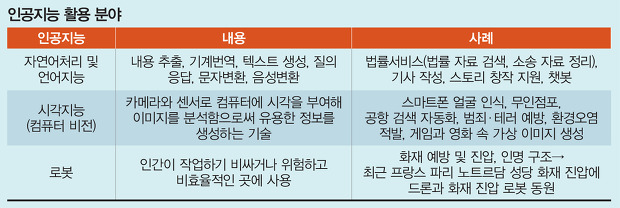

인공 지능(AI)은 학습, 창조, 이미지 인식 등과 같이 주로 인간 지능과 연결된 인지 문제를 해결하는 데 주력하는 컴퓨터 공학 분야입니다. 현대 조직은 스마트 센서, 사람이 생성한 콘텐츠, 모니터링 도구, 시스템 로그와 같은 다양한 소스에서 대량의 데이터를 수집합니다. AI의 목표는 데이터에서 의미를 도출하는 자기 학습 시스템을 만드는 것입니다. 그러면 AI는 그 지식을 인간과 같은 방식으로 새로운 문제를 해결하는 데 적용할 수 있습니다. 예를 들어 AI 기술은 사람의 대화에 의미 있게 반응하고, 독창적인 이미지와 텍스트를 만들고, 실시간 데이터 입력을 기반으로 결정을 내릴 수 있습니다. 조직은 애플리케이션에 AI 기능을 통합하여 비즈니스 프로세스를 최적화하고 고객 경험을 개선하며 혁신을 가속화할 수 있습니다.
상당수 인공지능 연구의 (본래) 목적은 심리학에 대한 실험적인 접근이었고, 언어 지능(linguistic intelligence)이 무엇인지를 밝혀내는 것이 주목표였다. 1940년대 후반과 1950년대 초반에 이르러서 수학, 철학, 공학, 경제 등 다양한 영역의 과학자들에게서 인공적인 두뇌의 가능성이 논의되었다. 1956년에 이르러서, 인공지능이 학문 분야로 들어섰다.
머신 러닝(ML)은 인간이 학습하는 방식을 모방하기 위한 데이터와 알고리즘의 사용에 초점을 맞춘 인공 지능(AI)의 한 분야로서, 시간이 지남에 따라 점차 정확도를 향상시킨다.
딥러닝은 머신러닝의 한 분야입니다. 연속된 층(Layer)에서 점진적으로 학습을 하는 것에 강점이 있으며, 기계 학습의 새로운 방식입니다. 딥러닝에서 딥(Deep)은 연속된 층으로 학습한다는 의미입니다. 층의 숫자는 모델의 깊이를 나타내기 때문입니다.
|  |